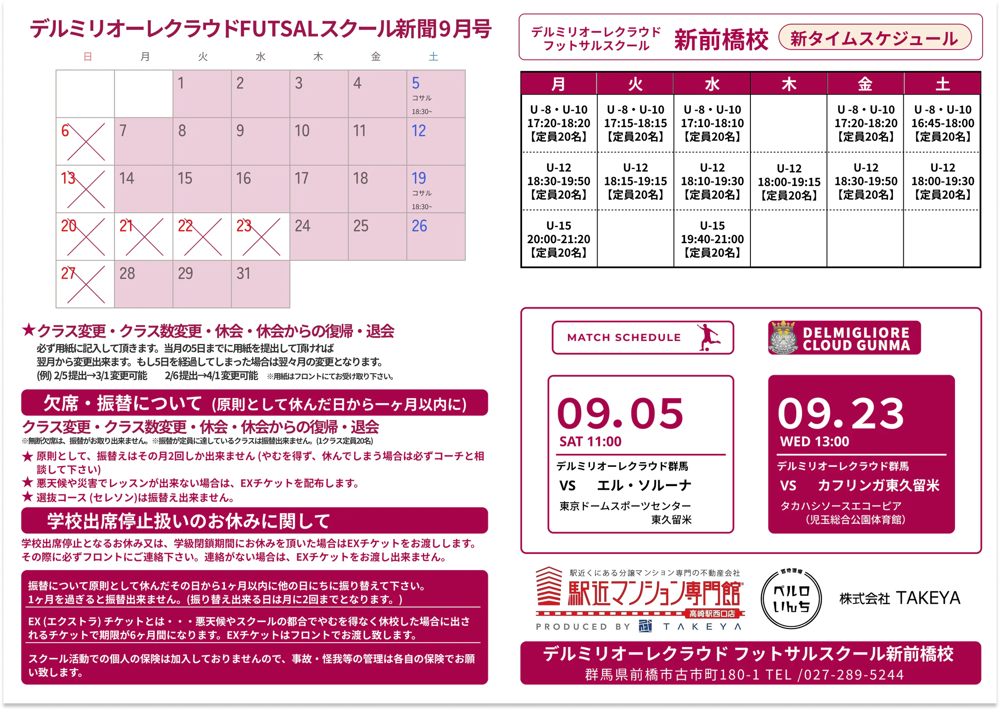
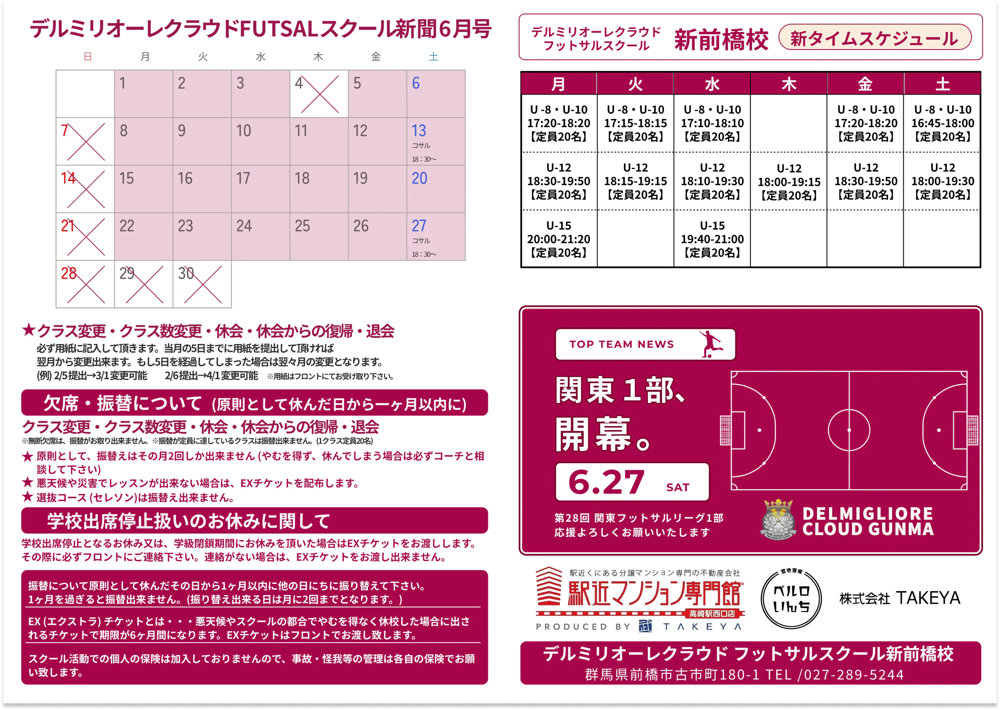
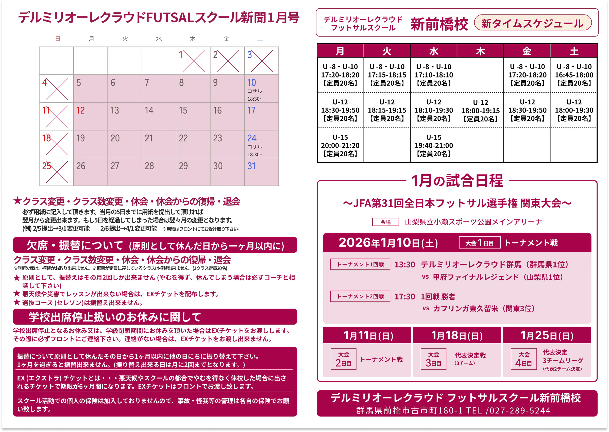
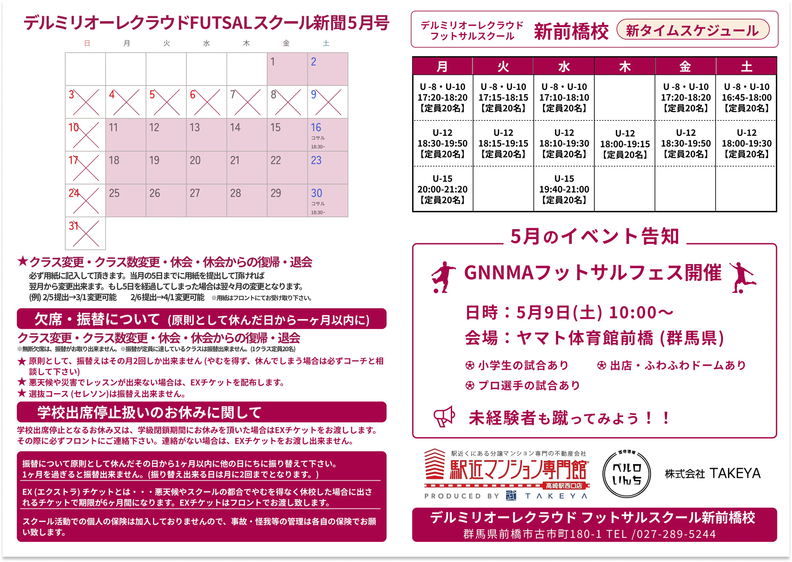

デルミリオーレクラウド
FUTSALスクール新聞
既存の紙面フォーマットを引き継ぎ、月ごとの情報に合わせて日程と告知エリアを調整する月刊スクール新聞。
{kind=link}

クライアント
デルミリオーレクラウド
制作期間
2025年9月〜2026年9月（継続制作）
制作体制
ディレクター 1名 / デザイナー 1名（本人）
担当範囲
月次カレンダーの更新・調整 / 試合・イベント告知エリアのデザイン / レイアウト調整 / 画像加工 / 提出前チェック
主な閲覧対象
スクール生・保護者 / チームのファン・フォロワー / イベントや試合に関心のあるフットサルファン
使用ツール
Figma / Photoshop
制作・納品
A4横 / PDF・PNGをZIPにまとめて納品 / InstagramなどのSNSで利用
デルミリオーレクラウドFUTSALスクールの月刊スクール新聞を、2025年9月から継続して制作しています。
既存の紙面フォーマットを引き継ぎながら、毎月のスクール日程を更新し、試合・イベント告知エリアを中心にデザインを担当しています。
社内ディレクターから共有される試合日程、対戦相手、イベント情報などを整理し、その月の内容に合わせてレイアウトを調整。Figmaを中心に制作し、必要に応じてPhotoshopで画像加工を行っています。
告知内容に合わせて、毎月同じ見た目を繰り返さないようレイアウトを調整しています。
試合がある月は日時・対戦相手・会場などの情報に優先順位をつけ、イベント中心の月では内容がひと目で伝わる構成へ変更しています。
試合がない場合にはスポンサー情報や過去の成績などを活用し、限られたスペースの中で必要な情報が読み取りやすくなるよう整理しています。スポンサーを掲載する際は、指定された掲載順とロゴの抜け漏れも確認しています。
一方で、既存のカラーや紙面構成を維持し、スクール新聞としての統一感を崩さないことも意識しています。
制作開始当初は1号あたり2〜3時間ほどかかっていましたが、現在は約1時間でデザインをまとめ、その後30分ほど確認時間を取る流れまで効率化しています。
情報量が多い場合も、掲載内容を整理し、不明点をディレクターへ確認してからデザインへ進むことで、限られた時間の中でも必要な情報を絞り込めるようになりました。
初稿完成後は社内ディレクターへ提出し、自分とディレクターの双方で内容を確認。必要に応じてクライアントからの修正内容を反映しています。
過去に修正が発生した項目については、自分用の提出前チェックリストへ追加しています。以降の制作ではチェック項目として確認することで、同じ内容で再度修正が発生しないよう、制作フロー自体を継続的に改善しています。
{kind=link}

{kind=link}

{kind=link}
